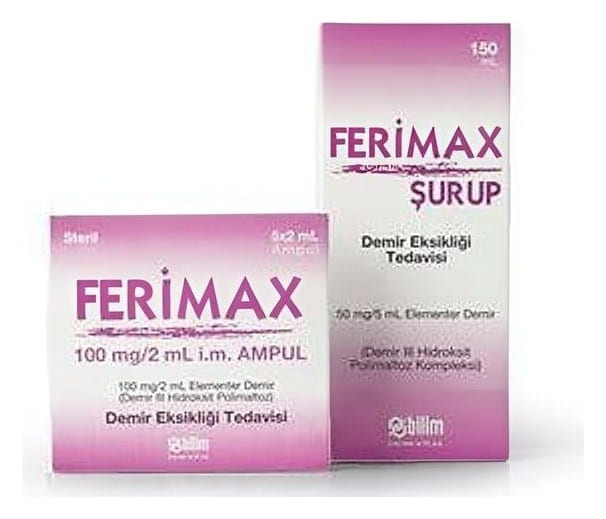

Ferimax 100 mg/2 ml IM Enjeksiyonluk Çözelti İçeren Ampul, 5 Ampul

Ne için kullanılır
KT · Bölüm 1FERİMAX, 5 adet 2 mL’lik ampul içeren kutularda sunulur.
FERİMAX etkin madde olarak Demir III Hidroksit Polimaltoz Kompleksi içerir.
Değişik kökenli tüm demir eksiklikleri ile demir eksikliği anemisinin (kansızlık) tedavisinde ve bu tür anemilerden korunmada; hızlı ve etkili yerine koyma tedavisinde ve özellikle aşağıdaki durumlar mevcutsa kullanılır:
Ciddi demir eksikliğinde (örn. kanamadan sonra) Mide-barsak sisteminden demir emiliminin bozulduğu hallerde Ağızdan alınan demir ilaçlarına dayanılamayan durumlarda Tedaviye dirençli demir eksikliklerinde Mide-bağırsak sisteminden demirin emilmesinde bozulma nedeniyle kansızlık gelişmişse, Mide-bağırsak sistemindeki şiddetli kanama nedeniyle demir eksikliğine bağlı kansızlık gelişmişse, Midenin tamamının veya bir kısmının alınması nedeniyle demir eksikliği ve kansızlık gelişmişse, Demir eksikliğine bağlı kansızlığı olan ve ağız yoluyla alınan demiri tolere edemeyen hastalarda, Demir eksikliği nedeniyle kansızlık gelişen ve ağız yoluyla alınan demirin yeterli düzeyde etki göstermediği hastalarda, Doktorunuz, demir depolarınızın hızla doldurulmasının gerektiğine ve bu nedenle demir uygulanmasına karar verdiyse, Eritropoetin (EPO) (kan yapımını uyaran bir hormon) tedavisi alan diyaliz (kanın temizlenmesi işlemi)’e bağımlı olan veya olmayan kronik böbrek yetmezliği hastalarında demir eksikliği varlığında,
FERİMAX gebeliğin ilk 3 aylık döneminde önerilmemelidir. Gebeliğin ikinci ve üçüncü 3 aylık döneminde ise hekimin zorunlu bulduğu hallerde kullanılmalıdır.